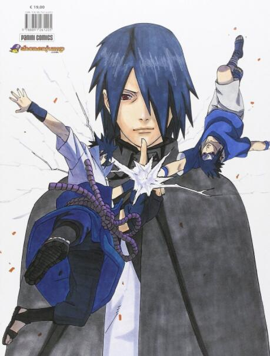

|  | 性别：男 | 配音：杉山纪彰,东山奈央,梁伟德,黄丽芳,林凯羚,张文渔 |
| 别名：Uchiha Sasuke、二柱子 | |
| 人物属性：忍者、天才、基友、转世、傲娇 写轮眼、轮回眼、异色瞳 | |
| 人物外貌：蓝发黑瞳,头发与刘海延长至尾部逐渐变为碎发。 | |
| 身份：未来的七代目火影的挚友 | |
| 人物介绍：
宇智波佐助(うちはサスケ，声优：杉山纪彰、东山奈央(幼年)(日本);林凯羚(台湾))鸣人与朋友以及劲敌。宇智波一族的后代。第二部时成为逃亡忍者而一度与鸣人敌对，第四次忍界大战后回归。 木叶村宇智波一族的天才忍者，鸣人的同期兼好基友。和鸣人、樱同属卡卡西第七班。是六道仙人长子因陀罗的转世。 沉着冷静，有着冷静的判断力和领导能力，无论是在中忍考试时期还是鹰小队时期都是作为队长率领队伍进行行动。一生只流过三次泪：家族被屠、得知鼬屠族的真相、与鸣人终结谷之战后。 |
|
| 人物点评： 宇智波佐助(うちはサスケ，Uchiha Sasuke)是日本动漫作品《火影忍者》中的主要角色之一。在第四次忍界大战中跟漩涡鸣人和春野樱被称为新的木叶三忍。 宇智波佐助是卡卡西领队的第七班的前成员，特征是黑色中分短发，后方稍翘，黑瞳孔，通常穿着蓝短袖上衣与灰短裤(中忍考试后期一度穿黑色连身衣)。故事开始的时候，佐助在木叶被公认为同龄忍者中的天才人物，他无论做什么都比别人要强，而且非常轻松，总是一副很酷的姿态，因此非常受女孩子欢迎。虽然受到众多女孩子垂青，但佐助所关心的仅仅是如何变强。他很少关注别人，除非对方能够帮助他达成目标。佐助对力量的执著追求一直左右着他人生中的重大抉择，进而使他决定离开村子，自愿跟着音忍四人众到音忍者村接受大蛇丸的指导，以取得足以“复仇”的力量。 在第二部剧情中，佐助除能力大幅提高(约S级)，装扮也有相当大的变化，初期改穿纯白和服(在与迪达拉后至和鼬对战期间黑色背心)、黑色长裤配注连绳，并携带一把直刀(草薙剑)作为武器。在与亲兄弟鼬战斗中倒下，并从阿飞(带土)听闻木叶高层为杀戮族人的背后元凶后，深感悲愤的佐助除了万花筒写轮眼开眼外，外表方面上身更换为白色短袖拉链(拉到锁骨处)装、额头被头发覆盖，个性为了向木叶复仇(毁灭木叶)变得更为残忍，不同于第二部前期尽量不杀生，在战斗中屡屡施展致命招式;移植鼬的双眼提升瞳力后，佐助上衣的拉链改拉到下巴处，经被秽土转生的哥哥明白与木叶一代至四代火影告知当年“灭族”真相与村族相关的解答后，心态目标则大为转变，愿为木叶的将来面对宇智波斑等强大敌手，进而以成为火影为目标。 佐助的童年一直生活在哥哥宇智波鼬的阴影下。鼬8岁能够使用写轮眼，13岁担任暗部分队长，天赋极佳。即使是佐助也无法望其项背。族员们也都认为鼬是宇智波家族的未来。特别是佐助的父亲，对鼬的赞赏之情溢于言表。为了向父母证明自己的能力，佐助非常刻苦的修行。但即使如此，还是无法超越鼬设立的一个又一个的高峰。鼬意识到佐助内心的挣扎后，试图让父亲转移一部分注意力到佐助身上，而且还答应帮助佐助修行。虽然经过鼬的努力，父亲开始在佐助身上多花时间，但是仍然只是一小部分。而且鼬也没兑现过他要帮助佐助修行的承诺，总是说明天还有任务。 随着时间的推移，鼬渐渐地和族员起了矛盾。他开始不用心做任务，而且越来越不可靠。而同时，鼬又不断地刺激佐助，激励佐助超过自己。因为鼬的变化，佐助的父亲也越来越多地开始关注佐助的成长。他教佐助“火遁·豪火球之术”，佐助刻苦练习，很快就学会了。父亲对佐助很满意，说：“真不愧是我的儿子……”，而这句话通常都是只对鼬说的。最后父亲叫佐助不要追随他哥哥的脚步。 在鼬被族员怀疑杀死了止水(真相是止水的左眼被团藏夺走后将其右眼给予鼬然后再从山崖跳下去自杀)之后不久的一天夜里，佐助回到家中，发现所有的族员全都死了。然后在自己家里，他看见鼬站在父母的尸体旁边。佐助通过鼬的万花筒写轮眼看到了鼬杀死双亲和全村人的过程，异常恐慌。鼬放过了佐助，说他太弱了，不值得一杀(其实是鼬是在保护佐助，不想让佐助陷入宇智波与木叶的纷争，而且自己对弟弟不忍心下手)。鼬还怂恿佐助要想超过他，就必须通过对他的仇恨来获得力量。并告诉佐助，他有机会可以跟自己一样得到万花筒写轮眼，只要像他一样，杀死和自己最亲密的朋友。从那以后，佐助就开始了孤儿的生活，也开始以憎恨的力量生存。而他的目标也变的非常清晰——不惜一切代价获得力量，从而杀死鼬为宇智波一族复仇。 和鸣人、春野樱在第四次忍界大战中被称为新的三忍 。 |
|
| “这双眼睛，能够看清黑暗！” | |
| 返回上一级 | |